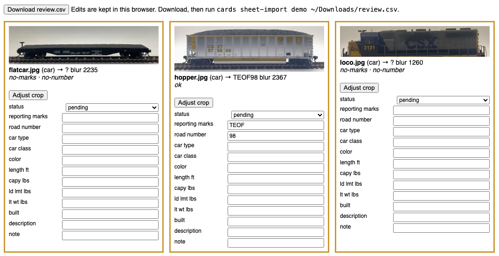
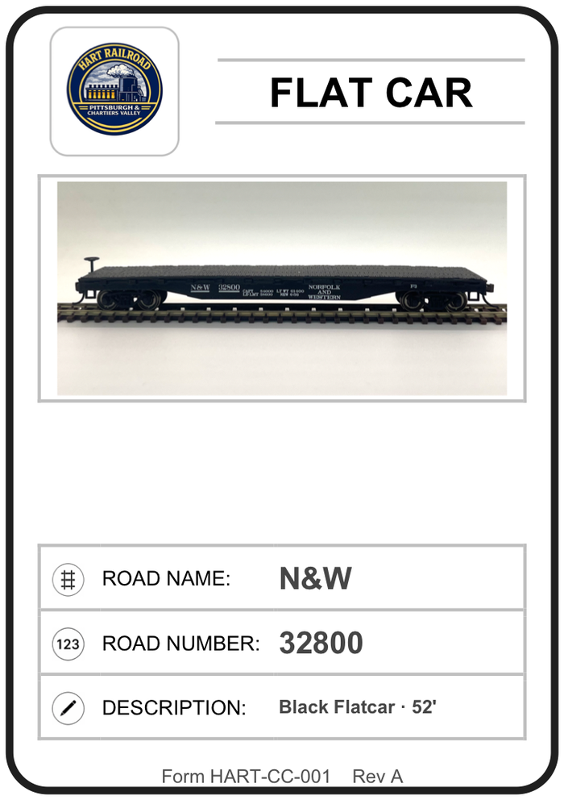

The Car Cards Plugin
A free plugin for AI coding agents that turns phone photos of your cars and locomotives into printed car cards. It is the workflow behind this railroad's cards, with nothing in it that knows this railroad.
You give an AI coding agent a folder of phone photos. The plugin crops and levels each one, reads the reporting marks and number, and puts every photo on one review page that you check in your browser. Once you approve it, it prints poker-size cards, nine to a US Letter sheet, each with the photo, road name, number and a short description.
Start here
Install it in Claude Code, open the agent in an empty folder with your photos, and ask it to run a first batch. The steps are in Getting started.
01What it is
A plugin for AI coding agents such as Claude Code, Cursor and Codex. It has three parts: a skill that tells the agent the order of the work and where to stop for you, a cards command that does the cropping, reading and printing, and a photo-reader agent that looks at every photo and marks where it disagrees with what the command read.
Everything about your railroad goes in one settings file, cards.toml, in your card folder: the railroad's name, logo and form number, your reporting marks and how they print (NW as N&W), car types, description rules, card stock and the words that must never print. Every setting has a default.
It is version 0.1.0 and in development, under the MIT licence.
02From photo to printed card
The agent works in stages and stops after each one for you to check.
- Review page. Photos in
photos/incoming/are cropped to the car, ending at the track, and levelled. Tesseract reads the reporting marks, the road number and the capacity stencils. Every photo goes on one page in your browser, with the ones that need a look flagged: blurry, unread, an odd number length, marks not in your fleet, duplicates, likely locomotives. - Photo check. The agent looks at each photo itself and notes where it reads something different. It changes nothing.
- Your corrections. Every field on the page can be edited, and Adjust crop re-cuts a picture with a drag-and-zoom picker. You download the page's
review.csvand the agent brings the edits back. - Approval and records. Approved cars and locomotives go into two plain CSV files,
data/cars.csvanddata/locos.csv. - Locomotive details. Locomotives get an even grey backdrop instead of the freight-car crop. You type in the model, builder and length.
- Printing. Cards not yet printed go into a Word file, nine to a sheet, with your logo and form number. A calibration page checks your stock first.

cards review first shows them. Two read nothing. The hopper read as TEOF 98 and is not flagged, because this folder has no fleet list; with CSX listed in cards.toml the mark would be flagged, and the photo check would note the real number.
03What you need
- An AI coding agent that runs commands on your computer: Claude Code, Cursor or Codex. A chat window is not enough, because the agent has to run the tool and look at the photos.
- Python 3.11 or newer, and Tesseract for reading text. The agent can install them.
- Photos taken the same way each time: side-on at about car height, the car on a short piece of track in front of a plain light backdrop. iPhone HEIC photos work on a Mac.
- Card stock. The default is poker-size sticker sheets, 2.5 × 3.5 in cards nine to a Letter page. Other stock works by changing the sheet settings.
04Getting started
In Claude Code, add the repository as a plugin marketplace and install the plugin:
claude plugin marketplace add lnevo/model-railroad-skills claude plugin install car-cards@model-railroad-skills
Cursor and Codex link the skill from a copy of the repository; the plugin README has the steps. Neither runs the photo-reader agent, so the skill does the photo check itself.
Make an empty folder for your cards, put your photos in photos/incoming/ inside it, open the agent there and say:
Use the car-cards skill. Set up a card folder here for my railroad, the [your railroad's name], then run a first batch from photos/incoming/ and stop at each stage for me to check.
- Start small. Five to ten cars of one type. When those print well, do the rest of the fleet.
- List your reporting marks in
cards.toml, so a misread mark is flagged. - Look at every crop on the review page, and expect to correct some numbers.
- Print the calibration page first, then a test sheet, before a full run.
If your agent can't install plugins, the getting-started page also has a longer prompt that has it build the same tool from scratch.
05How far to trust it
Lettering on model cars is hard for a computer to read. The OCR settings were tuned on one batch of hoppers with stencilled lettering, and on other cars it may read nothing at all. The photo check and your corrections on the review page fill the gaps, so every number on a card has been seen by you before it prints.
Know before you use it
- Status: version 0.1.0, in development. It has been run on Claude Code; Cursor and Codex have not been tried on a real agent yet.
- It does not read a locomotive's model, builder or DCC address from the photo, crop photos taken without a plain backdrop and a piece of track, or make waybills, switch lists or train cards.
- It does not send cars anywhere. The records are two CSV files for you to use as you like; nothing goes to an operations program.
- If a whole batch crops badly, check how the photos were taken before anything else.
06On this railroad
The plugin is this railroad's own card workflow, described in Car cards from photos, made generic. Here the same records go on to JMRI Operations Pro, the STS traffic simulator and this website; the plugin leaves those steps out.
The railroad's own card printing will move to the plugin, with its settings in a cards.toml, and the later steps will take the plugin's CSV files. How crews use the cards in a session is on Car Cards & Waybills.
07Get it
The plugin is public and free, under the MIT licence: github.com/lnevo/model-railroad-skills/plugins/car-cards. It is a separate install from the read-only skills in the same repository. The README lists every cards command and the settings file has its own reference.
NotesReferences
- The car-cards plugin README (GitHub). plugins/car-cards
- The settings reference (GitHub). references/settings.md
- Make your own car cards from photos, the getting-started page with the build-it-yourself prompt (GitHub). docs/ops/CAR_CARDS_FROM_PHOTOS_PROMPT.md
- Tesseract OCR. github.com/tesseract-ocr/tesseract
More: Car Cards & Waybills · The Operations Pro Plugin · Setting up car movement · Behind the Scenes